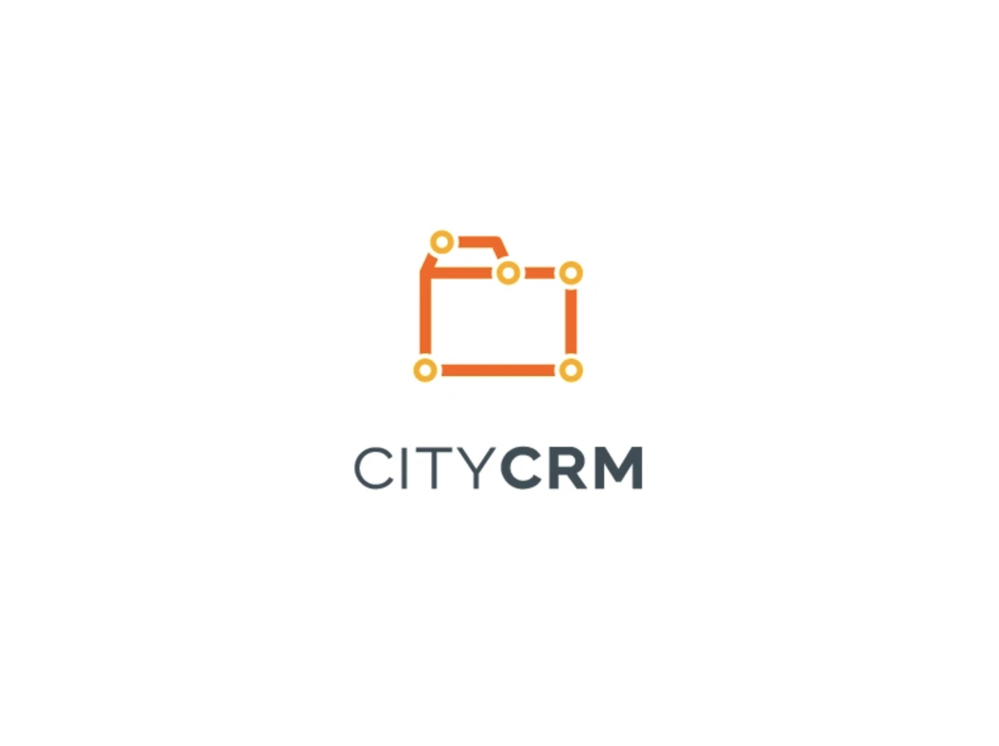
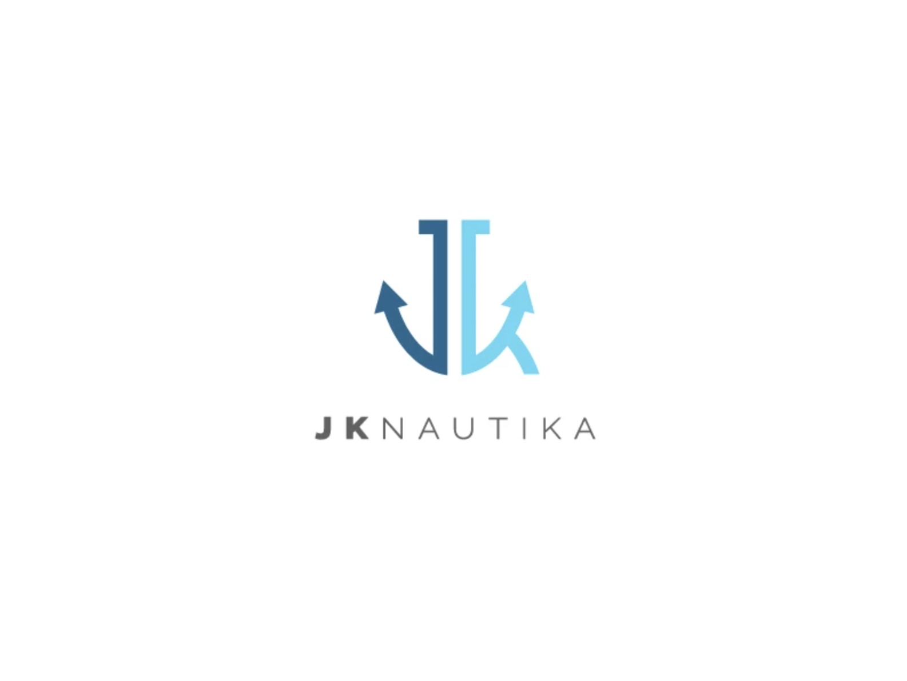
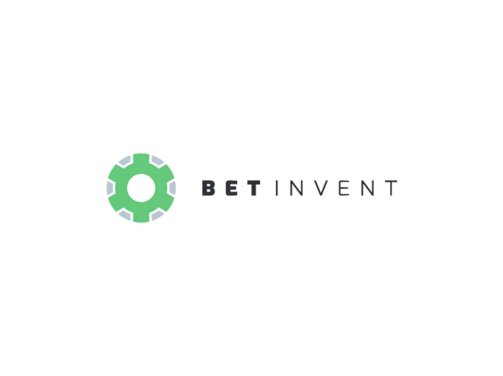
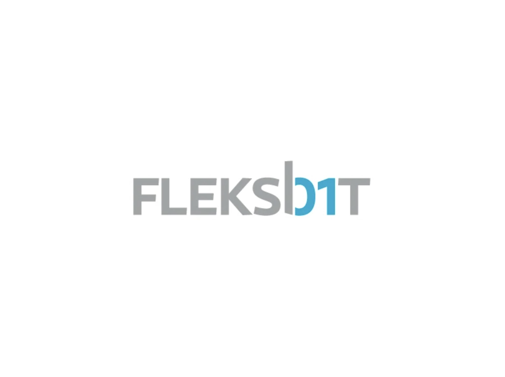
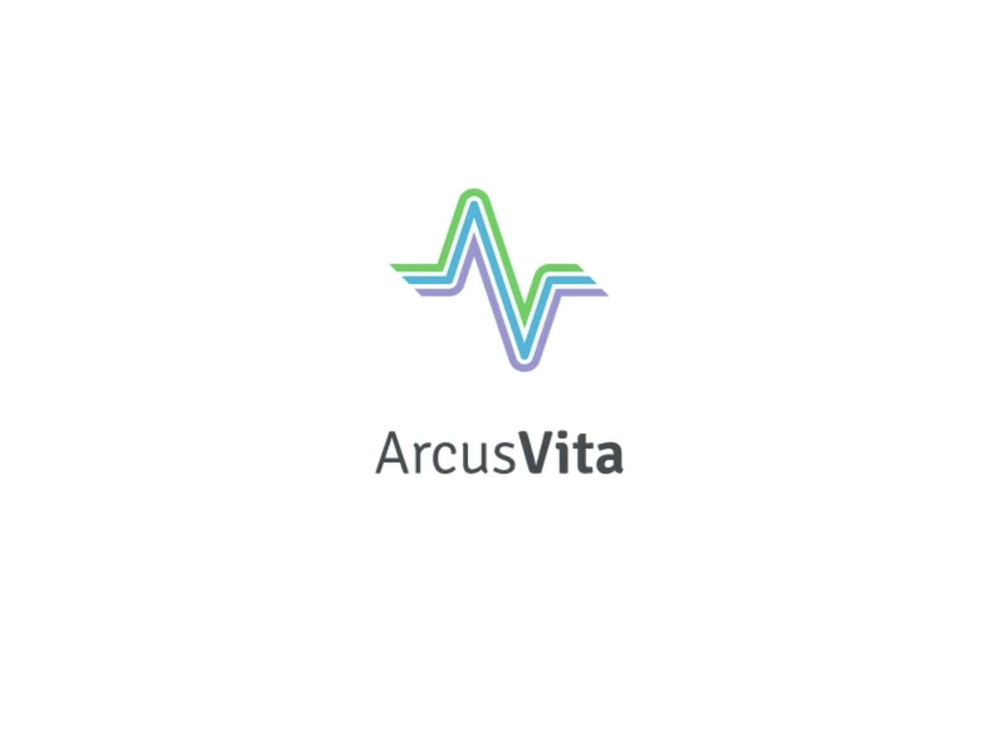
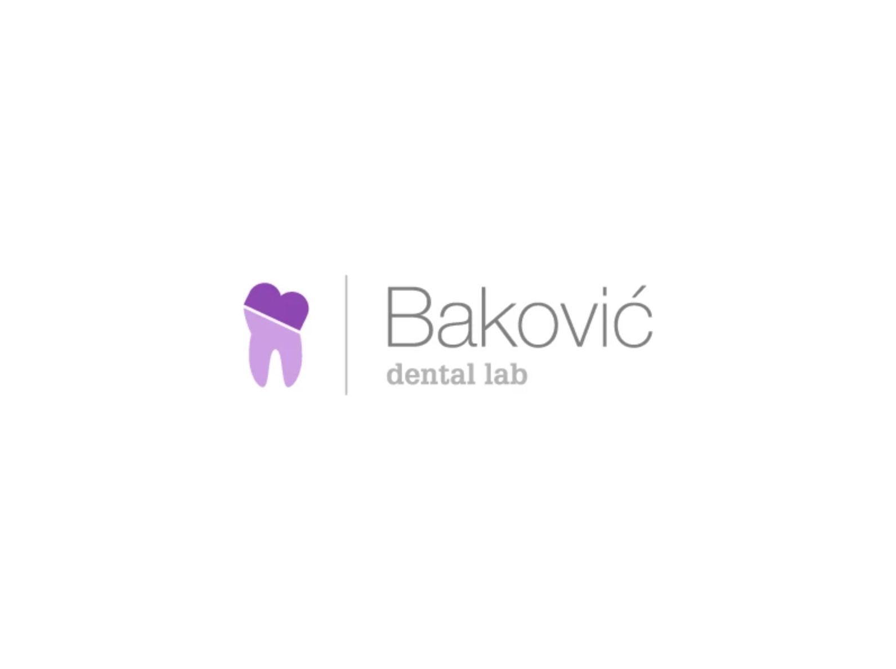
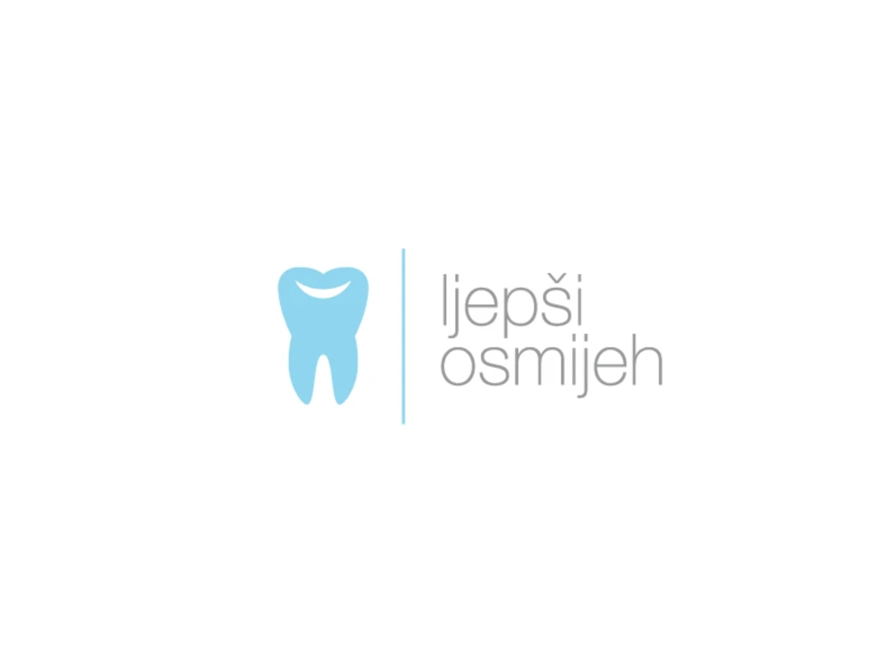

Other logos — small marks, big ideas. (2015 – 2020)
A selection of logos made for software companies, a nautical business, healthcare and dental practices — each one reduced to a simple, memorable idea.






